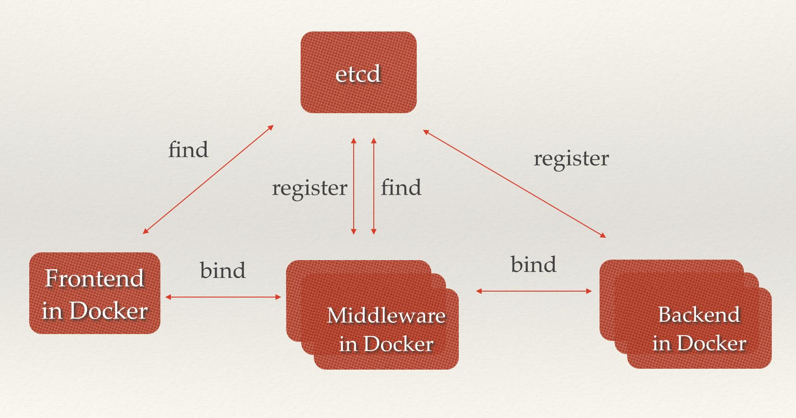
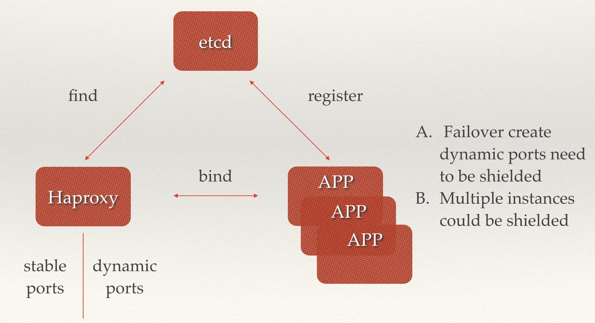
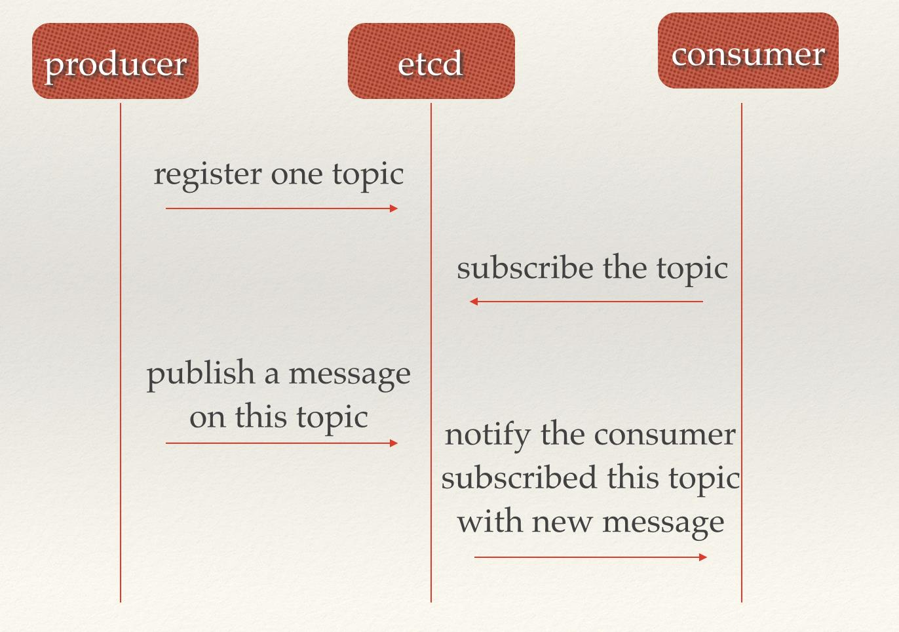
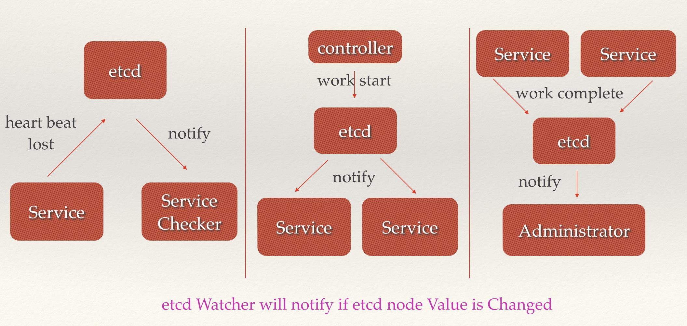
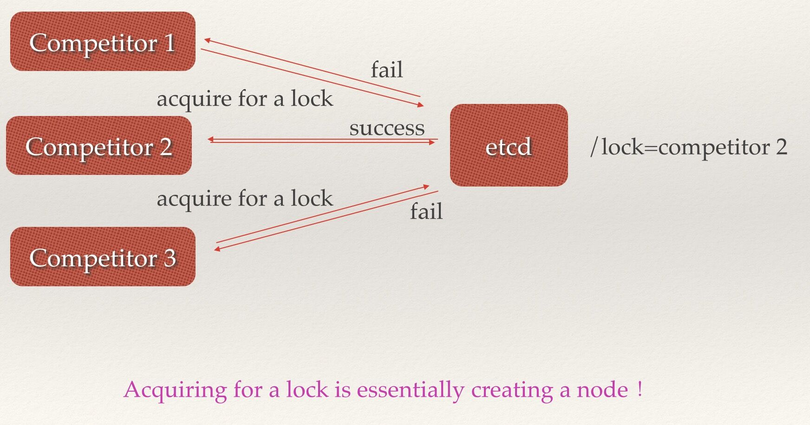
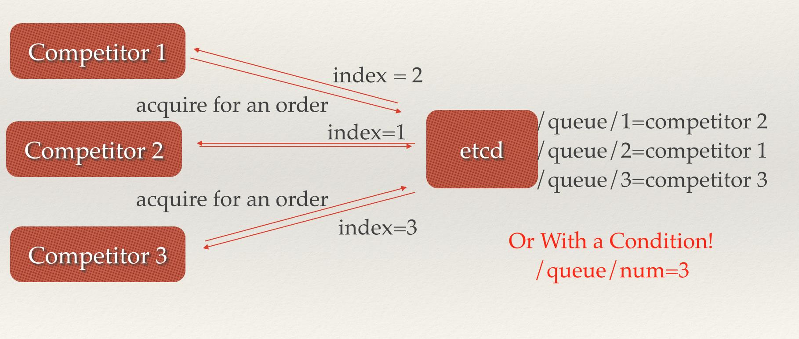
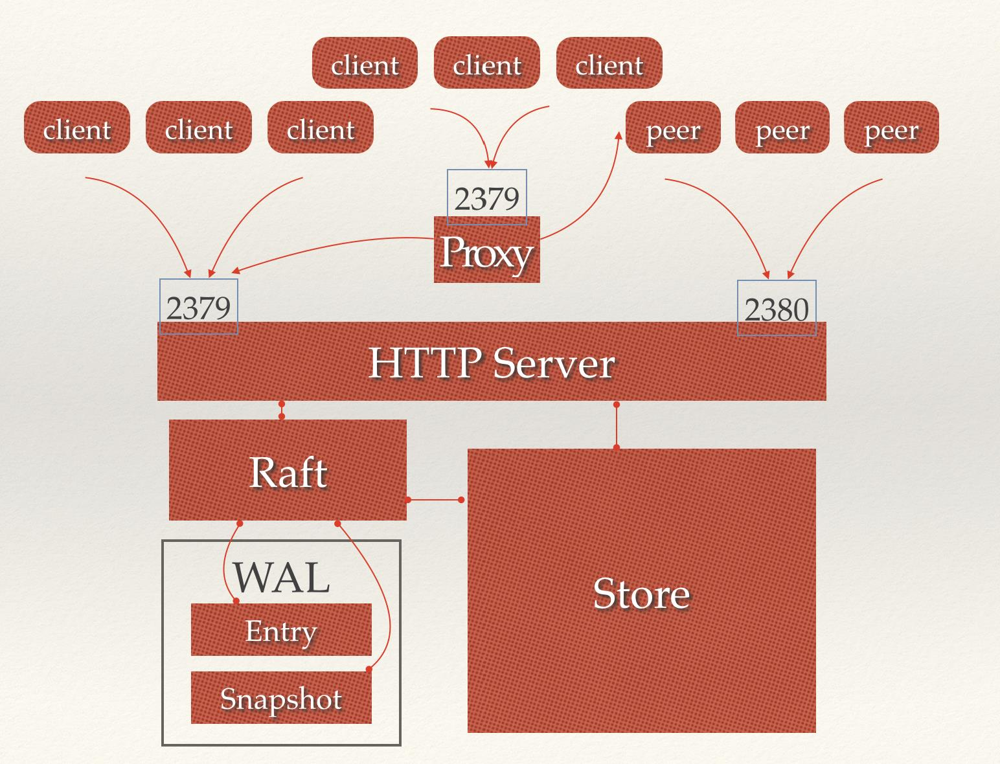
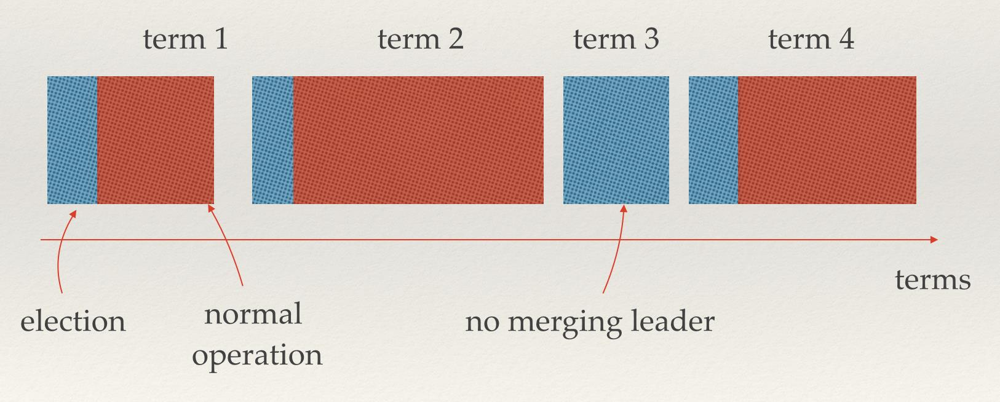
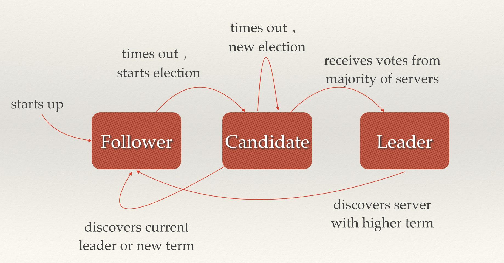
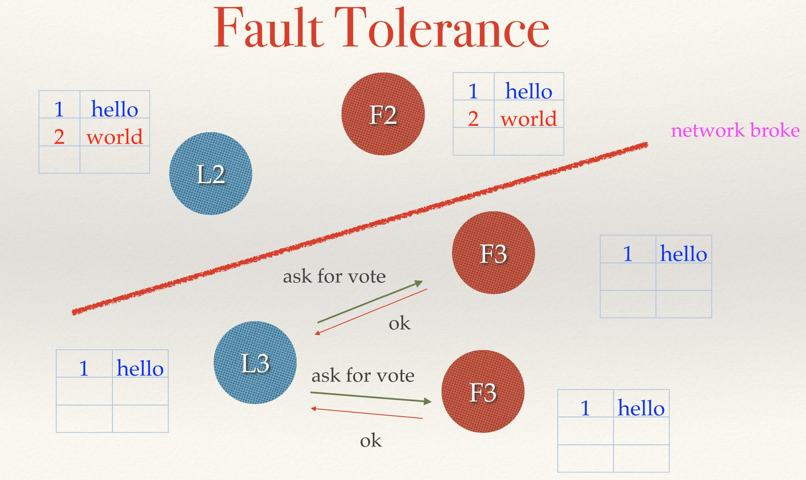

.jpg)
etcd：从应用场景到实现原理的全方位解读
随着CoreOS和Kubernetes等项目在开源社区日益火热，它们项目中都用到的etcd组件作为一个高可用强一致性的服务发现存储仓库，渐渐为开发人员所关注。在云计算时代，如何让服务快速透明地接入到计算集群中，如何让共享配置信息快速被集群中的所有机器发现，更为重要的是，如何构建这样一套高可用、安全、易于部署以及响应快速的服务集群，已经成为了迫切需要解决的问题。etcd为解决这类问题带来了福音，本文将从etcd的应用场景开始，深入解读etcd的实现方式，以供开发者们更为充分地享用etcd所带来的便利。
经典应用场景
要问etcd是什么？很多人第一反应可能是一个键值存储仓库，却没有重视官方定义的后半句，用于配置共享和服务发现。
A highly-available key value store for shared configuration and service discovery.
实际上，etcd作为一个受到ZooKeeper与doozer启发而催生的项目，除了拥有与之类似的功能外，更专注于以下四点。
- 简单：基于HTTP+JSON的API让你用curl就可以轻松使用。
- 安全：可选SSL客户认证机制。
- 快速：每个实例每秒支持一千次写操作。
- 可信：使用Raft算法充分实现了分布式。
随着云计算的不断发展，分布式系统中涉及到的问题越来越受到人们重视。受阿里中间件团队对ZooKeeper典型应用场景一览一文的启发，笔者根据自己的理解也总结了一些etcd的经典使用场景。让我们来看看etcd这个基于Raft强一致性算法的分布式存储仓库能给我们带来哪些帮助。
值得注意的是，分布式系统中的数据分为控制数据和应用数据。使用etcd的场景默认处理的数据都是控制数据，对于应用数据，只推荐数据量很小，但是更新访问频繁的情况。
场景一：服务发现（Service Discovery）
服务发现要解决的也是分布式系统中最常见的问题之一，即在同一个分布式集群中的进程或服务，要如何才能找到对方并建立连接。本质上来说，服务发现就是想要了解集群中是否有进程在监听udp或tcp端口，并且通过名字就可以查找和连接。要解决服务发现的问题，需要有下面三大支柱，缺一不可。
- 一个强一致性、高可用的服务存储目录。基于Raft算法的etcd天生就是这样一个强一致性高可用的服务存储目录。
- 一种注册服务和监控服务健康状态的机制。用户可以在etcd中注册服务，并且对注册的服务设置
key TTL，定时保持服务的心跳以达到监控健康状态的效果。 - 一种查找和连接服务的机制。通过在etcd指定的主题下注册的服务也能在对应的主题下查找到。为了确保连接，我们可以在每个服务机器上都部署一个Proxy模式的etcd，这样就可以确保能访问etcd集群的服务都能互相连接。

图1 服务发现示意图
下面我们来看服务发现对应的具体场景。
- 微服务协同工作架构中，服务动态添加。随着Docker容器的流行，多种微服务共同协作，构成一个相对功能强大的架构的案例越来越多。透明化的动态添加这些服务的需求也日益强烈。通过服务发现机制，在etcd中注册某个服务名字的目录，在该目录下存储可用的服务节点的IP。在使用服务的过程中，只要从服务目录下查找可用的服务节点去使用即可。

图2 微服务协同工作
- PaaS平台中应用多实例与实例故障重启透明化。PaaS平台中的应用一般都有多个实例，通过域名，不仅可以透明的对这多个实例进行访问，而且还可以做到负载均衡。但是应用的某个实例随时都有可能故障重启，这时就需要动态的配置域名解析（路由）中的信息。通过etcd的服务发现功能就可以轻松解决这个动态配置的问题。

图3 云平台多实例透明化
场景二：消息发布与订阅
在分布式系统中，最适用的一种组件间通信方式就是消息发布与订阅。即构建一个配置共享中心，数据提供者在这个配置中心发布消息，而消息使用者则订阅他们关心的主题，一旦主题有消息发布，就会实时通知订阅者。通过这种方式可以做到分布式系统配置的集中式管理与动态更新。
- 应用中用到的一些配置信息放到etcd上进行集中管理。这类场景的使用方式通常是这样：应用在启动的时候主动从etcd获取一次配置信息，同时，在etcd节点上注册一个Watcher并等待，以后每次配置有更新的时候，etcd都会实时通知订阅者，以此达到获取最新配置信息的目的。
- 分布式搜索服务中，索引的元信息和服务器集群机器的节点状态存放在etcd中，供各个客户端订阅使用。使用etcd的
key TTL功能可以确保机器状态是实时更新的。 - 分布式日志收集系统。这个系统的核心工作是收集分布在不同机器的日志。收集器通常是按照应用（或主题）来分配收集任务单元，因此可以在etcd上创建一个以应用（主题）命名的目录P，并将这个应用（主题相关）的所有机器ip，以子目录的形式存储到目录P上，然后设置一个etcd递归的Watcher，递归式的监控应用（主题）目录下所有信息的变动。这样就实现了机器IP（消息）变动的时候，能够实时通知到收集器调整任务分配。
- 系统中信息需要动态自动获取与人工干预修改信息请求内容的情况。通常是暴露出接口，例如JMX接口，来获取一些运行时的信息。引入etcd之后，就不用自己实现一套方案了，只要将这些信息存放到指定的etcd目录中即可，etcd的这些目录就可以通过HTTP的接口在外部访问。

图4 消息发布与订阅
场景三：负载均衡
在场景一中也提到了负载均衡，本文所指的负载均衡均为软负载均衡。分布式系统中，为了保证服务的高可用以及数据的一致性，通常都会把数据和服务部署多份，以此达到对等服务，即使其中的某一个服务失效了，也不影响使用。由此带来的坏处是数据写入性能下降，而好处则是数据访问时的负载均衡。因为每个对等服务节点上都存有完整的数据，所以用户的访问流量就可以分流到不同的机器上。
- etcd本身分布式架构存储的信息访问支持负载均衡。etcd集群化以后，每个etcd的核心节点都可以处理用户的请求。所以，把数据量小但是访问频繁的消息数据直接存储到etcd中也是个不错的选择，如业务系统中常用的二级代码表（在表中存储代码，在etcd中存储代码所代表的具体含义，业务系统调用查表的过程，就需要查找表中代码的含义）。
- 利用etcd维护一个负载均衡节点表。etcd可以监控一个集群中多个节点的状态，当有一个请求发过来后，可以轮询式的把请求转发给存活着的多个状态。类似KafkaMQ，通过ZooKeeper来维护生产者和消费者的负载均衡。同样也可以用etcd来做ZooKeeper的工作。

图5 负载均衡
场景四：分布式通知与协调
这里说到的分布式通知与协调，与消息发布和订阅有些相似。都用到了etcd中的Watcher机制，通过注册与异步通知机制，实现分布式环境下不同系统之间的通知与协调，从而对数据变更做到实时处理。实现方式通常是这样：不同系统都在etcd上对同一个目录进行注册，同时设置Watcher观测该目录的变化（如果对子目录的变化也有需要，可以设置递归模式），当某个系统更新了etcd的目录，那么设置了Watcher的系统就会收到通知，并作出相应处理。
- 通过etcd进行低耦合的心跳检测。检测系统和被检测系统通过etcd上某个目录关联而非直接关联起来，这样可以大大减少系统的耦合性。
- 通过etcd完成系统调度。某系统有控制台和推送系统两部分组成，控制台的职责是控制推送系统进行相应的推送工作。管理人员在控制台作的一些操作，实际上是修改了etcd上某些目录节点的状态，而etcd就把这些变化通知给注册了Watcher的推送系统客户端，推送系统再作出相应的推送任务。
- 通过etcd完成工作汇报。大部分类似的任务分发系统，子任务启动后，到etcd来注册一个临时工作目录，并且定时将自己的进度进行汇报（将进度写入到这个临时目录），这样任务管理者就能够实时知道任务进度。

图6 分布式协同工作
场景五：分布式锁
因为etcd使用Raft算法保持了数据的强一致性，某次操作存储到集群中的值必然是全局一致的，所以很容易实现分布式锁。锁服务有两种使用方式，一是保持独占，二是控制时序。
- 保持独占即所有获取锁的用户最终只有一个可以得到。etcd为此提供了一套实现分布式锁原子操作CAS（
CompareAndSwap）的API。通过设置prevExist值，可以保证在多个节点同时去创建某个目录时，只有一个成功。而创建成功的用户就可以认为是获得了锁。 - 控制时序，即所有想要获得锁的用户都会被安排执行，但是获得锁的顺序也是全局唯一的，同时决定了执行顺序。etcd为此也提供了一套API（自动创建有序键），对一个目录建值时指定为
POST动作，这样etcd会自动在目录下生成一个当前最大的值为键，存储这个新的值（客户端编号）。同时还可以使用API按顺序列出所有当前目录下的键值。此时这些键的值就是客户端的时序，而这些键中存储的值可以是代表客户端的编号。

图7 分布式锁
场景六：分布式队列
分布式队列的常规用法与场景五中所描述的分布式锁的控制时序用法类似，即创建一个先进先出的队列，保证顺序。
另一种比较有意思的实现是在保证队列达到某个条件时再统一按顺序执行。这种方法的实现可以在/queue这个目录中另外建立一个/queue/condition节点。
- condition可以表示队列大小。比如一个大的任务需要很多小任务就绪的情况下才能执行，每次有一个小任务就绪，就给这个condition数字加1，直到达到大任务规定的数字，再开始执行队列里的一系列小任务，最终执行大任务。
- condition可以表示某个任务在不在队列。这个任务可以是所有排序任务的首个执行程序，也可以是拓扑结构中没有依赖的点。通常，必须执行这些任务后才能执行队列中的其他任务。
- condition还可以表示其它的一类开始执行任务的通知。可以由控制程序指定，当condition出现变化时，开始执行队列任务。

图8 分布式队列
场景七：集群监控与Leader竞选
通过etcd来进行监控实现起来非常简单并且实时性强。
- 前面几个场景已经提到Watcher机制，当某个节点消失或有变动时，Watcher会第一时间发现并告知用户。
- 节点可以设置
TTL key，比如每隔30s发送一次心跳使代表该机器存活的节点继续存在，否则节点消失。
这样就可以第一时间检测到各节点的健康状态，以完成集群的监控要求。
另外，使用分布式锁，可以完成Leader竞选。这种场景通常是一些长时间CPU计算或者使用IO操作的机器，只需要竞选出的Leader计算或处理一次，就可以把结果复制给其他的Follower。从而避免重复劳动，节省计算资源。
这个的经典场景是搜索系统中建立全量索引。如果每个机器都进行一遍索引的建立，不但耗时而且建立索引的一致性不能保证。通过在etcd的CAS机制同时创建一个节点，创建成功的机器作为Leader，进行索引计算，然后把计算结果分发到其它节点。

图9 Leader竞选
场景八：为什么用etcd而不用ZooKeeper？
阅读了“ZooKeeper典型应用场景一览”一文的读者可能会发现，etcd实现的这些功能，ZooKeeper都能实现。那么为什么要用etcd而非直接使用ZooKeeper呢？
相较之下，ZooKeeper有如下缺点：
- 复杂。ZooKeeper的部署维护复杂，管理员需要掌握一系列的知识和技能；而Paxos强一致性算法也是素来以复杂难懂而闻名于世；另外，ZooKeeper的使用也比较复杂，需要安装客户端，官方只提供了Java和C两种语言的接口。
- Java编写。这里不是对Java有偏见，而是Java本身就偏向于重型应用，它会引入大量的依赖。而运维人员则普遍希望保持强一致、高可用的机器集群尽可能简单，维护起来也不易出错。
- 发展缓慢。Apache基金会项目特有的“Apache Way”在开源界饱受争议，其中一大原因就是由于基金会庞大的结构以及松散的管理导致项目发展缓慢。
而etcd作为一个后起之秀，其优点也很明显。
- 简单。使用Go语言编写部署简单；使用HTTP作为接口使用简单；使用Raft算法保证强一致性让用户易于理解。
- 数据持久化。etcd默认数据一更新就进行持久化。
- 安全。etcd支持SSL客户端安全认证。
最后，etcd作为一个年轻的项目，真正告诉迭代和开发中，这既是一个优点，也是一个缺点。优点是它的未来具有无限的可能性，缺点是无法得到大项目长时间使用的检验。然而，目前CoreOS、Kubernetes和CloudFoundry等知名项目均在生产环境中使用了etcd，所以总的来说，etcd值得你去尝试。
etcd实现原理解读
上一节中，我们概括了许多etcd的经典场景，这一节，我们将从etcd的架构开始，深入到源码中解析etcd。
1 架构

图10 etcd架构图
从etcd的架构图中我们可以看到，etcd主要分为四个部分。
- HTTP Server： 用于处理用户发送的API请求以及其它etcd节点的同步与心跳信息请求。
- Store：用于处理etcd支持的各类功能的事务，包括数据索引、节点状态变更、监控与反馈、事件处理与执行等等，是etcd对用户提供的大多数API功能的具体实现。
- Raft：Raft强一致性算法的具体实现，是etcd的核心。
- WAL：Write Ahead Log（预写式日志），是etcd的数据存储方式。除了在内存中存有所有数据的状态以及节点的索引以外，etcd就通过WAL进行持久化存储。WAL中，所有的数据提交前都会事先记录日志。Snapshot是为了防止数据过多而进行的状态快照；Entry表示存储的具体日志内容。
通常，一个用户的请求发送过来，会经由HTTP Server转发给Store进行具体的事务处理，如果涉及到节点的修改，则交给Raft模块进行状态的变更、日志的记录，然后再同步给别的etcd节点以确认数据提交，最后进行数据的提交，再次同步。
2 新版etcd重要变更列表
- 获得了IANA认证的端口，2379用于客户端通信，2380用于节点通信，与原先的（4001 peers / 7001 clients）共用。
- 每个节点可监听多个广播地址。监听的地址由原来的一个扩展到多个，用户可以根据需求实现更加复杂的集群环境，如一个是公网IP，一个是虚拟机（容器）之类的私有IP。
- etcd可以代理访问leader节点的请求，所以如果你可以访问任何一个etcd节点，那么你就可以无视网络的拓扑结构对整个集群进行读写操作。
- etcd集群和集群中的节点都有了自己独特的ID。这样就防止出现配置混淆，不是本集群的其他etcd节点发来的请求将被屏蔽。
- etcd集群启动时的配置信息目前变为完全固定，这样有助于用户正确配置和启动。
- 运行时节点变化(Runtime Reconfiguration)。用户不需要重启 etcd 服务即可实现对 etcd 集群结构进行变更。启动后可以动态变更集群配置。
- 重新设计和实现了Raft算法，使得运行速度更快，更容易理解，包含更多测试代码。
- Raft日志现在是严格的只能向后追加、预写式日志系统，并且在每条记录中都加入了CRC校验码。
- 启动时使用的_etcd/* 关键字不再暴露给用户
- 废弃集群自动调整功能的standby模式，这个功能使得用户维护集群更困难。
- 新增Proxy模式，不加入到etcd一致性集群中，纯粹进行代理转发。
- ETCD_NAME（-name）参数目前是可选的，不再用于唯一标识一个节点。
- 摒弃通过配置文件配置 etcd 属性的方式，你可以用环境变量的方式代替。
- 通过自发现方式启动集群必须要提供集群大小，这样有助于用户确定集群实际启动的节点数量。
3 etcd概念词汇表
- Raft：etcd所采用的保证分布式系统强一致性的算法。
- Node：一个Raft状态机实例。
- Member： 一个etcd实例。它管理着一个Node，并且可以为客户端请求提供服务。
- Cluster：由多个Member构成可以协同工作的etcd集群。
- Peer：对同一个etcd集群中另外一个Member的称呼。
- Client： 向etcd集群发送HTTP请求的客户端。
- WAL：预写式日志，etcd用于持久化存储的日志格式。
- snapshot：etcd防止WAL文件过多而设置的快照，存储etcd数据状态。
- Proxy：etcd的一种模式，为etcd集群提供反向代理服务。
- Leader：Raft算法中通过竞选而产生的处理所有数据提交的节点。
- Follower：竞选失败的节点作为Raft中的从属节点，为算法提供强一致性保证。
- Candidate：当Follower超过一定时间接收不到Leader的心跳时转变为Candidate开始竞选。
- Term：某个节点成为Leader到下一次竞选时间，称为一个Term。
- Index：数据项编号。Raft中通过Term和Index来定位数据。
4 集群化应用实践
etcd作为一个高可用键值存储系统，天生就是为集群化而设计的。由于Raft算法在做决策时需要多数节点的投票，所以etcd一般部署集群推荐奇数个节点，推荐的数量为3、5或者7个节点构成一个集群。
4.1 集群启动
etcd有三种集群化启动的配置方案，分别为静态配置启动、etcd自身服务发现、通过DNS进行服务发现。
通过配置内容的不同，你可以对不同的方式进行选择。值得一提的是，这也是新版etcd区别于旧版的一大特性，它摒弃了使用配置文件进行参数配置的做法，转而使用命令行参数或者环境变量的做法来配置参数。
4.1.1. 静态配置
这种方式比较适用于离线环境，在启动整个集群之前，你就已经预先清楚所要配置的集群大小，以及集群上各节点的地址和端口信息。那么启动时，你就可以通过配置initial-cluster参数进行etcd集群的启动。
在每个etcd机器启动时，配置环境变量或者添加启动参数的方式如下。
ETCD_INITIAL_CLUSTER="infra0=http://10.0.1.10:2380,infra1=http://10.0.1.11:2380,infra2=http://10.0.1.12:2380" ETCD_INITIAL_CLUSTER_STATE=new
参数方法：
-initial-cluster infra0=http://10.0.1.10:2380,http://10.0.1.11:2380,infra2=http://10.0.1.12:2380 \ -initial-cluster-state new
值得注意的是，-initial-cluster参数中配置的url地址必须与各个节点启动时设置的initial-advertise-peer-urls参数相同。（initial-advertise-peer-urls参数表示节点监听其他节点同步信号的地址）
如果你所在的网络环境配置了多个etcd集群，为了避免意外发生，最好使用-initial-cluster-token参数为每个集群单独配置一个token认证。这样就可以确保每个集群和集群的成员都拥有独特的ID。
综上所述，如果你要配置包含3个etcd节点的集群，那么你在三个机器上的启动命令分别如下所示。
$ etcd -name infra0 -initial-advertise-peer-urls http://10.0.1.10:2380 \ -listen-peer-urls http://10.0.1.10:2380 \ -initial-cluster-token etcd-cluster-1 \ -initial-cluster infra0=http://10.0.1.10:2380,infra1=http://10.0.1.11:2380,infra2=http://10.0.1.12:2380 \ -initial-cluster-state new $ etcd -name infra1 -initial-advertise-peer-urls http://10.0.1.11:2380 \ -listen-peer-urls http://10.0.1.11:2380 \ -initial-cluster-token etcd-cluster-1 \ -initial-cluster infra0=http://10.0.1.10:2380,infra1=http://10.0.1.11:2380,infra2=http://10.0.1.12:2380 \ -initial-cluster-state new $ etcd -name infra2 -initial-advertise-peer-urls http://10.0.1.12:2380 \ -listen-peer-urls http://10.0.1.12:2380 \ -initial-cluster-token etcd-cluster-1 \ -initial-cluster infra0=http://10.0.1.10:2380,infra1=http://10.0.1.11:2380,infra2=http://10.0.1.12:2380 \ -initial-cluster-state new
在初始化完成后，etcd还提供动态增、删、改etcd集群节点的功能，这个需要用到etcdctl命令进行操作。
4.1.2. etcd自发现模式
通过自发现的方式启动etcd集群需要事先准备一个etcd集群。如果你已经有一个etcd集群，首先你可以执行如下命令设定集群的大小，假设为3.
$ curl -X PUT http://myetcd.local/v2/keys/discovery/6c007a14875d53d9bf0ef5a6fc0257c817f0fb83/_config/size -d value=3
然后你要把这个url地址http://myetcd.local/v2/keys/discovery/6c007a14875d53d9bf0ef5a6fc0257c817f0fb83作为-discovery参数来启动etcd。节点会自动使用http://myetcd.local/v2/keys/discovery/6c007a14875d53d9bf0ef5a6fc0257c817f0fb83目录进行etcd的注册和发现服务。
所以最终你在某个机器上启动etcd的命令如下。
$ etcd -name infra0 -initial-advertise-peer-urls http://10.0.1.10:2380 \ -listen-peer-urls http://10.0.1.10:2380 \ -discovery http://myetcd.local/v2/keys/discovery/6c007a14875d53d9bf0ef5a6fc0257c817f0fb83
如果你本地没有可用的etcd集群，etcd官网提供了一个可以公网访问的etcd存储地址。你可以通过如下命令得到etcd服务的目录，并把它作为-discovery参数使用。
$ curl http://discovery.etcd.io/new?size=3 http://discovery.etcd.io/3e86b59982e49066c5d813af1c2e2579cbf573de
同样的，当你完成了集群的初始化后，这些信息就失去了作用。当你需要增加节点时，需要使用etcdctl来进行操作。
为了安全，请务必每次启动新etcd集群时，都使用新的discovery token进行注册。另外，如果你初始化时启动的节点超过了指定的数量，多余的节点会自动转化为Proxy模式的etcd。
4.1.3. DNS自发现模式
etcd还支持使用DNS SRV记录进行启动。关于DNS SRV记录如何进行服务发现，可以参阅RFC2782，所以，你要在DNS服务器上进行相应的配置。
(1) 开启DNS服务器上SRV记录查询，并添加相应的域名记录，使得查询到的结果类似如下。
$ dig +noall +answer SRV _etcd-server._tcp.example.com _etcd-server._tcp.example.com. 300 IN SRV 0 0 2380 infra0.example.com. _etcd-server._tcp.example.com. 300 IN SRV 0 0 2380 infra1.example.com. _etcd-server._tcp.example.com. 300 IN SRV 0 0 2380 infra2.example.com.
(2) 分别为各个域名配置相关的A记录指向etcd核心节点对应的机器IP。使得查询结果类似如下。
$ dig +noall +answer infra0.example.com infra1.example.com infra2.example.com infra0.example.com. 300 IN A 10.0.1.10 infra1.example.com. 300 IN A 10.0.1.11 infra2.example.com. 300 IN A 10.0.1.12
做好了上述两步DNS的配置，就可以使用DNS启动etcd集群了。配置DNS解析的url参数为-discovery-srv，其中某一个节点地启动命令如下。
$ etcd -name infra0 \ -discovery-srv example.com \ -initial-advertise-peer-urls http://infra0.example.com:2380 \ -initial-cluster-token etcd-cluster-1 \ -initial-cluster-state new \ -advertise-client-urls http://infra0.example.com:2379 \ -listen-client-urls http://infra0.example.com:2379 \ -listen-peer-urls http://infra0.example.com:2380
当然，你也可以直接把节点的域名改成IP来启动。
4.2 关键部分源码解析
etcd的启动是从主目录下的main.go开始的，然后进入etcdmain/etcd.go，载入配置参数。如果被配置为Proxy模式，则进入startProxy函数，否则进入startEtcd，开启etcd服务模块和http请求处理模块。
在启动http监听时，为了保持与集群其他etcd机器（peers）保持连接，都采用的transport.NewTimeoutListener启动方式，这样在超过指定时间没有获得响应时就会出现超时错误。而在监听client请求时，采用的是transport.NewKeepAliveListener，有助于连接的稳定。
在etcdmain/etcd.go中的setupCluster函数可以看到，根据不同etcd的参数，启动集群的方法略有不同，但是最终需要的就是一个IP与端口构成的字符串。
在静态配置的启动方式中，集群的所有信息都已经在给出，所以直接解析用逗号隔开的集群url信息就好了。
DNS发现的方式类似，会预先发送一个tcp的SRV请求，先查看etcd-server-ssl._tcp.example.com下是否有集群的域名信息，如果没有找到，则去查看etcd-server._tcp.example.com。根据找到的域名，解析出对应的IP和端口，即集群的url信息。
较为复杂是etcd式的自发现启动。首先就用自身单个的url构成一个集群，然后在启动的过程中根据参数进入discovery/discovery.go源码的JoinCluster函数。因为我们事先是知道启动时使用的etcd的token地址的，里面包含了集群大小(size)信息。在这个过程其实是个不断监测与等待的过程。启动的第一步就是在这个etcd的token目录下注册自身的信息，然后再监测token目录下所有节点的数量，如果数量没有达标，则循环等待。当数量达到要求时，才结束，进入正常的启动过程。
配置etcd过程中通常要用到两种url地址容易混淆，一种用于etcd集群同步信息并保持连接，通常称为peer-urls；另外一种用于接收用户端发来的HTTP请求，通常称为client-urls。
peer-urls：通常监听的端口为2380（老版本使用的端口为7001），包括所有已经在集群中正常工作的所有节点的地址。client-urls：通常监听的端口为2379（老版本使用的端口为4001），为适应复杂的网络环境，新版etcd监听客户端请求的url从原来的1个变为现在可配置的多个。这样etcd可以配合多块网卡同时监听不同网络下的请求。
4.3 运行时节点变更
etcd集群启动完毕后，可以在运行的过程中对集群进行重构，包括核心节点的增加、删除、迁移、替换等。运行时重构使得etcd集群无须重启即可改变集群的配置，这也是新版etcd区别于旧版包含的新特性。
只有当集群中多数节点正常的情况下，你才可以进行运行时的配置管理。因为配置更改的信息也会被etcd当成一个信息存储和同步，如果集群多数节点损坏，集群就失去了写入数据的能力。所以在配置etcd集群数量时，强烈推荐至少配置3个核心节点。
4.3.1. 节点迁移、替换
当你节点所在的机器出现硬件故障，或者节点出现如数据目录损坏等问题，导致节点永久性的不可恢复时，就需要对节点进行迁移或者替换。当一个节点失效以后，必须尽快修复，因为etcd集群正常运行的必要条件是集群中多数节点都正常工作。
迁移一个节点需要进行四步操作：
- 暂停正在运行着的节点程序进程
- 把数据目录从现有机器拷贝到新机器
- 使用api更新etcd中对应节点指向机器的url记录更新为新机器的ip
- 使用同样的配置项和数据目录，在新的机器上启动etcd。
4.3.2. 节点增加
增加节点可以让etcd的高可用性更强。举例来说，如果你有3个节点，那么最多允许1个节点失效；当你有5个节点时，就可以允许有2个节点失效。同时，增加节点还可以让etcd集群具有更好的读性能。因为etcd的节点都是实时同步的，每个节点上都存储了所有的信息，所以增加节点可以从整体上提升读的吞吐量。
增加一个节点需要进行两步操作：
- 在集群中添加这个节点的url记录，同时获得集群的信息。
- 使用获得的集群信息启动新etcd节点。
4.3.3. 节点移除
有时你不得不在提高etcd的写性能和增加集群高可用性上进行权衡。Leader节点在提交一个写记录时，会把这个消息同步到每个节点上，当得到多数节点的同意反馈后，才会真正写入数据。所以节点越多，写入性能越差。在节点过多时，你可能需要移除一个或多个。
移除节点非常简单，只需要一步操作，就是把集群中这个节点的记录删除。然后对应机器上的该节点就会自动停止。
4.3.4. 强制性重启集群
当集群超过半数的节点都失效时，就需要通过手动的方式，强制性让某个节点以自己为Leader，利用原有数据启动一个新集群。
此时你需要进行两步操作。
- 备份原有数据到新机器。
- 使用
-force-new-cluster加备份的数据重新启动节点
注意：强制性重启是一个迫不得已的选择，它会破坏一致性协议保证的安全性（如果操作时集群中尚有其它节点在正常工作，就会出错），所以在操作前请务必要保存好数据。
5 Proxy模式
Proxy模式也是新版etcd的一个重要变更，etcd作为一个反向代理把客户的请求转发给可用的etcd集群。这样，你就可以在每一台机器都部署一个Proxy模式的etcd作为本地服务，如果这些etcd Proxy都能正常运行，那么你的服务发现必然是稳定可靠的。

图11 Proxy模式示意图
所以Proxy并不是直接加入到符合强一致性的etcd集群中，也同样的，Proxy并没有增加集群的可靠性，当然也没有降低集群的写入性能。
5.1 Proxy取代Standby模式的原因
那么，为什么要有Proxy模式而不是直接增加etcd核心节点呢？实际上etcd每增加一个核心节点（peer），都会增加Leader节点一定程度的包括网络、CPU和磁盘的负担，因为每次信息的变化都需要进行同步备份。增加etcd的核心节点可以让整个集群具有更高的可靠性，但是当数量达到一定程度以后，增加可靠性带来的好处就变得不那么明显，反倒是降低了集群写入同步的性能。因此，增加一个轻量级的Proxy模式etcd节点是对直接增加etcd核心节点的一个有效代替。
熟悉0.4.6这个旧版本etcd的用户会发现，Proxy模式实际上是取代了原先的Standby模式。Standby模式除了转发代理的功能以外，还会在核心节点因为故障导致数量不足的时候，从Standby模式转为正常节点模式。而当那个故障的节点恢复时，发现etcd的核心节点数量已经达到的预先设置的值，就会转为Standby模式。
但是新版etcd中，只会在最初启动etcd集群时，发现核心节点的数量已经满足要求时，自动启用Proxy模式，反之则并未实现。主要原因如下。
- etcd是用来保证高可用的组件，因此它所需要的系统资源（包括内存、硬盘和CPU等）都应该得到充分保障以保证高可用。任由集群的自动变换随意地改变核心节点，无法让机器保证性能。所以etcd官方鼓励大家在大型集群中为运行etcd准备专有机器集群。
- 因为etcd集群是支持高可用的，部分机器故障并不会导致功能失效。所以机器发生故障时，管理员有充分的时间对机器进行检查和修复。
- 自动转换使得etcd集群变得复杂，尤其是如今etcd支持多种网络环境的监听和交互。在不同网络间进行转换，更容易发生错误，导致集群不稳定。
基于上述原因，目前Proxy模式有转发代理功能，而不会进行角色转换。
5.2 关键部分源码解析
从代码中可以看到，Proxy模式的本质就是起一个HTTP代理服务器，把客户发到这个服务器的请求转发给别的etcd节点。
etcd目前支持读写皆可和只读两种模式。默认情况下是读写皆可，就是把读、写两种请求都进行转发。而只读模式只转发读的请求，对所有其他请求返回501错误。
值得注意的是，除了启动过程中因为设置了proxy参数会作为Proxy模式启动。在etcd集群化启动时，节点注册自身的时候监测到集群的实际节点数量已经符合要求，那么就会退化为Proxy模式。
6 数据存储
etcd的存储分为内存存储和持久化（硬盘）存储两部分，内存中的存储除了顺序化的记录下所有用户对节点数据变更的记录外，还会对用户数据进行索引、建堆等方便查询的操作。而持久化则使用预写式日志（WAL：Write Ahead Log）进行记录存储。
在WAL的体系中，所有的数据在提交之前都会进行日志记录。在etcd的持久化存储目录中，有两个子目录。一个是WAL，存储着所有事务的变化记录；另一个则是snapshot，用于存储某一个时刻etcd所有目录的数据。通过WAL和snapshot相结合的方式，etcd可以有效的进行数据存储和节点故障恢复等操作。
既然有了WAL实时存储了所有的变更，为什么还需要snapshot呢？随着使用量的增加，WAL存储的数据会暴增，为了防止磁盘很快就爆满，etcd默认每10000条记录做一次snapshot，经过snapshot以后的WAL文件就可以删除。而通过API可以查询的历史etcd操作默认为1000条。
首次启动时，etcd会把启动的配置信息存储到data-dir参数指定的数据目录中。配置信息包括本地节点的ID、集群ID和初始时集群信息。用户需要避免etcd从一个过期的数据目录中重新启动，因为使用过期的数据目录启动的节点会与集群中的其他节点产生不一致（如：之前已经记录并同意Leader节点存储某个信息，重启后又向Leader节点申请这个信息）。所以，为了最大化集群的安全性，一旦有任何数据损坏或丢失的可能性，你就应该把这个节点从集群中移除，然后加入一个不带数据目录的新节点。
6.1 预写式日志（WAL）
WAL（Write Ahead Log）最大的作用是记录了整个数据变化的全部历程。在etcd中，所有数据的修改在提交前，都要先写入到WAL中。使用WAL进行数据的存储使得etcd拥有两个重要功能。
- 故障快速恢复： 当你的数据遭到破坏时，就可以通过执行所有WAL中记录的修改操作，快速从最原始的数据恢复到数据损坏前的状态。
- 数据回滚（undo）/重做（redo）：因为所有的修改操作都被记录在WAL中，需要回滚或重做，只需要方向或正向执行日志中的操作即可。
WAL与snapshot在etcd中的命名规则
在etcd的数据目录中，WAL文件以$seq-$index.wal的格式存储。最初始的WAL文件是0000000000000000-0000000000000000.wal，表示是所有WAL文件中的第0个，初始的Raft状态编号为0。运行一段时间后可能需要进行日志切分，把新的条目放到一个新的WAL文件中。
假设，当集群运行到Raft状态为20时，需要进行WAL文件的切分时，下一份WAL文件就会变为0000000000000001-0000000000000021.wal。如果在10次操作后又进行了一次日志切分，那么后一次的WAL文件名会变为0000000000000002-0000000000000031.wal。可以看到-符号前面的数字是每次切分后自增1，而-符号后面的数字则是根据实际存储的Raft起始状态来定。
snapshot的存储命名则比较容易理解，以$term-$index.wal格式进行命名存储。term和index就表示存储snapshot时数据所在的raft节点状态，当前的任期编号以及数据项位置信息。
6.2 关键部分源码解析
从代码逻辑中可以看到，WAL有两种模式，读模式（read）和数据添加（append）模式，两种模式不能同时成立。一个新创建的WAL文件处于append模式，并且不会进入到read模式。一个本来存在的WAL文件被打开的时候必然是read模式，并且只有在所有记录都被读完的时候，才能进入append模式，进入append模式后也不会再进入read模式。这样做有助于保证数据的完整与准确。
集群在进入到etcdserver/server.go的NewServer函数准备启动一个etcd节点时，会检测是否存在以前的遗留WAL数据。
检测的第一步是查看snapshot文件夹下是否有符合规范的文件，若检测到snapshot格式是v0.4的，则调用函数升级到v0.5。从snapshot中获得集群的配置信息，包括token、其他节点的信息等等，然后载入WAL目录的内容，从小到大进行排序。根据snapshot中得到的term和index，找到WAL紧接着snapshot下一条的记录，然后向后更新，直到所有WAL包的entry都已经遍历完毕，Entry记录到ents变量中存储在内存里。此时WAL就进入append模式，为数据项添加进行准备。
当WAL文件中数据项内容过大达到设定值（默认为10000）时，会进行WAL的切分，同时进行snapshot操作。这个过程可以在etcdserver/server.go的snapshot函数中看到。所以，实际上数据目录中有用的snapshot和WAL文件各只有一个，默认情况下etcd会各保留5个历史文件。
7 Raft
新版etcd中，raft包就是对Raft一致性算法的具体实现。关于Raft算法的讲解，网上已经有很多文章，有兴趣的读者可以去阅读一下Raft算法论文非常精彩。本文则不再对Raft算法进行详细描述，而是结合etcd，针对算法中一些关键内容以问答的形式进行讲解。有关Raft算法的术语如果不理解，可以参见概念词汇表一节。
7.1 Raft常见问答一览
- Raft中一个Term（任期）是什么意思？ Raft算法中，从时间上，一个任期讲即从一次竞选开始到下一次竞选开始。从功能上讲，如果Follower接收不到Leader节点的心跳信息，就会结束当前任期，变为Candidate发起竞选，有助于Leader节点故障时集群的恢复。发起竞选投票时，任期值小的节点不会竞选成功。如果集群不出现故障，那么一个任期将无限延续下去。而投票出现冲突也有可能直接进入下一任再次竞选。

图12 Term示意图
- Raft状态机是怎样切换的？ Raft刚开始运行时，节点默认进入Follower状态，等待Leader发来心跳信息。若等待超时，则状态由Follower切换到Candidate进入下一轮term发起竞选，等到收到集群多数节点的投票时，该节点转变为Leader。Leader节点有可能出现网络等故障，导致别的节点发起投票成为新term的Leader，此时原先的老Leader节点会切换为Follower。Candidate在等待其它节点投票的过程中如果发现别的节点已经竞选成功成为Leader了，也会切换为Follower节点。

图13 Raft状态机
- 如何保证最短时间内竞选出Leader，防止竞选冲突？ 在Raft状态机一图中可以看到，在Candidate状态下， 有一个times out，这里的times out时间是个随机值，也就是说，每个机器成为Candidate以后，超时发起新一轮竞选的时间是各不相同的，这就会出现一个时间差。在时间差内，如果Candidate1收到的竞选信息比自己发起的竞选信息term值大（即对方为新一轮term），并且新一轮想要成为Leader的Candidate2包含了所有提交的数据，那么Candidate1就会投票给Candidate2。这样就保证了只有很小的概率会出现竞选冲突。
- 如何防止别的Candidate在遗漏部分数据的情况下发起投票成为Leader？ Raft竞选的机制中，使用随机值决定超时时间，第一个超时的节点就会提升term编号发起新一轮投票，一般情况下别的节点收到竞选通知就会投票。但是，如果发起竞选的节点在上一个term中保存的已提交数据不完整，节点就会拒绝投票给它。通过这种机制就可以防止遗漏数据的节点成为Leader。
- Raft某个节点宕机后会如何？ 通常情况下，如果是Follower节点宕机，如果剩余可用节点数量超过半数，集群可以几乎没有影响的正常工作。如果是Leader节点宕机，那么Follower就收不到心跳而超时，发起竞选获得投票，成为新一轮term的Leader，继续为集群提供服务。需要注意的是；etcd目前没有任何机制会自动去变化整个集群总共的节点数量，即如果没有人为的调用API，etcd宕机后的节点仍然被计算为总节点数中，任何请求被确认需要获得的投票数都是这个总数的半数以上。

图14 节点宕机
- 为什么Raft算法在确定可用节点数量时不需要考虑拜占庭将军问题？ 拜占庭问题中提出，允许n个节点宕机还能提供正常服务的分布式架构，需要的总节点数量为3n+1，而Raft只需要2n+1就可以了。其主要原因在于，拜占庭将军问题中存在数据欺骗的现象，而etcd中假设所有的节点都是诚实的。etcd在竞选前需要告诉别的节点自身的term编号以及前一轮term最终结束时的index值，这些数据都是准确的，其他节点可以根据这些值决定是否投票。另外，etcd严格限制Leader到Follower这样的数据流向保证数据一致不会出错。
- 用户从集群中哪个节点读写数据？ Raft为了保证数据的强一致性，所有的数据流向都是一个方向，从Leader流向Follower，也就是所有Follower的数据必须与Leader保持一致，如果不一致会被覆盖。即所有用户更新数据的请求都最先由Leader获得，然后存下来通知其他节点也存下来，等到大多数节点反馈时再把数据提交。一个已提交的数据项才是Raft真正稳定存储下来的数据项，不再被修改，最后再把提交的数据同步给其他Follower。因为每个节点都有Raft已提交数据准确的备份（最坏的情况也只是已提交数据还未完全同步），所以读的请求任意一个节点都可以处理。
- etcd实现的Raft算法性能如何？ 单实例节点支持每秒1000次数据写入。节点越多，由于数据同步涉及到网络延迟，会根据实际情况越来越慢，而读性能会随之变强，因为每个节点都能处理用户请求。
7.2 关键部分源码解析
在etcd代码中，Node作为Raft状态机的具体实现，是整个算法的关键，也是了解算法的入口。
在etcd中，对Raft算法的调用如下，你可以在etcdserver/raft.go中的startNode找到：
storage := raft.NewMemoryStorage()
n := raft.StartNode(0x01, []int64{0x02, 0x03}, 3, 1, storage)
通过这段代码可以了解到，Raft在运行过程记录数据和状态都是保存在内存中，而代码中raft.StartNode启动的Node就是Raft状态机Node。启动了一个Node节点后，Raft会做如下事项。
首先，你需要把从集群的其他机器上收到的信息推送到Node节点，你可以在etcdserver/server.go中的Process函数看到。
func (s *EtcdServer) Process(ctx context.Context, m raftpb.Message) error {
if m.Type == raftpb.MsgApp {
s.stats.RecvAppendReq(types.ID(m.From).String(), m.Size())
}
return s.node.Step(ctx, m)
}
在检测发来请求的机器是否是集群中的节点，自身节点是否是Follower，把发来请求的机器作为Leader，具体对Node节点信息的推送和处理则通过node.Step()函数实现。
其次，你需要把日志项存储起来，在你的应用中执行提交的日志项，然后把完成信号发送给集群中的其它节点，再通过node.Ready()监听等待下一次任务执行。有一点非常重要，你必须确保在你发送完成消息给其他节点之前，你的日志项内容已经确切稳定的存储下来了。
最后，你需要保持一个心跳信号Tick()。Raft有两个很重要的地方用到超时机制：心跳保持和Leader竞选。需要用户在其raft的Node节点上周期性的调用Tick()函数，以便为超时机制服务。
综上所述，整个raft节点的状态机循环类似如下所示：
for {
select {
case <-s.Ticker:
n.Tick()
case rd := <-s.Node.Ready():
saveToStorage(rd.State, rd.Entries)
send(rd.Messages)
process(rd.CommittedEntries)
s.Node.Advance()
case <-s.done:
return
}
}
而这个状态机真实存在的代码位置为etcdserver/server.go中的run函数。
对状态机进行状态变更（如用户数据更新等）则是调用n.Propose(ctx, data)函数，在存储数据时，会先进行序列化操作。获得大多数其他节点的确认后，数据会被提交，存为已提交状态。
之前提到etcd集群的启动需要借助别的etcd集群或者DNS，而启动完毕后这些外力就不需要了，etcd会把自身集群的信息作为状态存储起来。所以要变更自身集群节点数量实际上也需要像用户数据变更那样添加数据条目到Raft状态机中。这一切由n.ProposeConfChange(ctx, cc)实现。当集群配置信息变更的请求同样得到大多数节点的确认反馈后，再进行配置变更的正式操作，代码如下。
var cc raftpb.ConfChange cc.Unmarshal(data) n.ApplyConfChange(cc)
注意：一个ID唯一性的表示了一个集群，所以为了避免不同etcd集群消息混乱，ID需要确保唯一性，不能重复使用旧的token数据作为ID。
8 Store
Store这个模块顾名思义，就像一个商店把etcd已经准备好的各项底层支持加工起来，为用户提供五花八门的API支持，处理用户的各项请求。要理解Store，只需要从etcd的API入手即可。打开etcd的API列表，我们可以看到有如下API是对etcd存储的键值进行的操作，亦即Store提供的内容。API中提到的目录（Directory）和键（Key），上文中也可能称为etcd节点（Node）。
- 为etcd存储的键赋值
curl http://127.0.0.1:2379/v2/keys/message -XPUT -d value="Hello world" { "action": "set", "node": { "createdIndex": 2, "key": "/message", "modifiedIndex": 2, "value": "Hello world" } }
反馈的内容含义如下：
- action: 刚刚进行的动作名称。
- node.key: 请求的HTTP路径。etcd使用一个类似文件系统的方式来反映键值存储的内容。
- node.value: 刚刚请求的键所存储的内容。
- node.createdIndex: etcd节点每次有变化时都会自增的一个值，除了用户请求外，etcd内部运行（如启动、集群信息变化等）也会对节点有变动而引起这个值的变化。
- node.modifiedIndex: 类似node.createdIndex，能引起modifiedIndex变化的操作包括set, delete, update, create, compareAndSwap and compareAndDelete。
- 查询etcd某个键存储的值
curl http://127.0.0.1:2379/v2/keys/message
- 修改键值：与创建新值几乎相同，但是反馈时会有一个
prevNode值反应了修改前存储的内容。curl http://127.0.0.1:2379/v2/keys/message -XPUT -d value="Hello etcd"
- 删除一个值
curl http://127.0.0.1:2379/v2/keys/message -XDELETE
- 对一个键进行定时删除：etcd中对键进行定时删除，设定一个TTL值，当这个值到期时键就会被删除。反馈的内容会给出expiration项告知超时时间，ttl项告知设定的时长。
curl http://127.0.0.1:2379/v2/keys/foo -XPUT -d value=bar -d ttl=5
- 取消定时删除任务
curl http://127.0.0.1:2379/v2/keys/foo -XPUT -d value=bar -d ttl= -d prevExist=true
- 对键值修改进行监控：etcd提供的这个API让用户可以监控一个值或者递归式的监控一个目录及其子目录的值，当目录或值发生变化时，etcd会主动通知。
curl http://127.0.0.1:2379/v2/keys/foo?wait=true
- 对过去的键值操作进行查询：类似上面提到的监控，只不过监控时加上了过去某次修改的索引编号，就可以查询历史操作。默认可查询的历史记录为1000条。
curl 'http://127.0.0.1:2379/v2/keys/foo?wait=true&waitIndex=7'
- 自动在目录下创建有序键。在对创建的目录使用
POST参数，会自动在该目录下创建一个以createdIndex值为键的值，这样就相当于以创建时间先后严格排序了。这个API对分布式队列这类场景非常有用。curl http://127.0.0.1:2379/v2/keys/queue -XPOST -d value=Job1 { "action": "create", "node": { "createdIndex": 6, "key": "/queue/6", "modifiedIndex": 6, "value": "Job1" } } - 按顺序列出所有创建的有序键。
curl -s 'http://127.0.0.1:2379/v2/keys/queue?recursive=true&sorted=true'
- 创建定时删除的目录：就跟定时删除某个键类似。如果目录因为超时被删除了，其下的所有内容也自动超时删除。
curl http://127.0.0.1:2379/v2/keys/dir -XPUT -d ttl=30 -d dir=true
刷新超时时间。
curl http://127.0.0.1:2379/v2/keys/dir -XPUT -d ttl=30 -d dir=true -d prevExist=true
- 自动化CAS（Compare-and-Swap）操作：etcd强一致性最直观的表现就是这个API，通过设定条件，阻止节点二次创建或修改。即用户的指令被执行当且仅当CAS的条件成立。条件有以下几个。
- prevValue 先前节点的值，如果值与提供的值相同才允许操作。
- prevIndex 先前节点的编号，编号与提供的校验编号相同才允许操作。
- prevExist 先前节点是否存在。如果存在则不允许操作。这个常常被用于分布式锁的唯一获取。
假设先进行了如下操作：设定了foo的值。
curl http://127.0.0.1:2379/v2/keys/foo -XPUT -d value=one
然后再进行操作：
curl http://127.0.0.1:2379/v2/keys/foo?prevExist=false -XPUT -d value=three
就会返回创建失败的错误。
- 条件删除（Compare-and-Delete）：与CAS类似，条件成立后才能删除。
- 创建目录
curl http://127.0.0.1:2379/v2/keys/dir -XPUT -d dir=true
- 列出目录下所有的节点信息，最后以
/结尾。还可以通过recursive参数递归列出所有子目录信息。curl http://127.0.0.1:2379/v2/keys/
- 删除目录：默认情况下只允许删除空目录，如果要删除有内容的目录需要加上
recursive=true参数。curl 'http://127.0.0.1:2379/v2/keys/foo_dir?dir=true' -XDELETE
- 创建一个隐藏节点：命名时名字以下划线
_开头默认就是隐藏键。curl http://127.0.0.1:2379/v2/keys/_message -XPUT -d value="Hello hidden world"
相信看完这么多API，读者已经对Store的工作内容基本了解了。它对etcd下存储的数据进行加工，创建出如文件系统般的树状结构供用户快速查询。它有一个Watcher用于节点变更的实时反馈，还需要维护一个WatcherHub对所有Watcher订阅者进行通知的推送。同时，它还维护了一个由定时键构成的小顶堆，快速返回下一个要超时的键。最后，所有这些API的请求都以事件的形式存储在事件队列中等待处理。
9 总结
通过从应用场景到源码分析的一系列回顾，我们了解到etcd并不是一个简单的分布式键值存储系统。它解决了分布式场景中最为常见的一致性问题，为服务发现提供了一个稳定高可用的消息注册仓库，为以微服务协同工作的架构提供了无限的可能。相信在不久的将来，通过etcd构建起来的大型系统会越来越多。
10 作者简介
孙健波，浙江大学SEL实验室硕士研究生，目前在云平台团队从事科研和开发工作。浙大团队对PaaS、Docker、大数据和主流开源云计算技术有深入的研究和二次开发经验，团队现将部分技术文章贡献出来，希望能对读者有所帮助。
参考文献
- https://github.com/coreos/etcd
- https://groups.google.com/forum/#!topic/etcd-dev/wmndjzBNdZo
- http://jm-blog.aliapp.com/?p=1232
- http://progrium.com/blog/2014/07/29/understanding-modern-service-discovery-with-docker/
- http://devo.ps/blog/zookeeper-vs-doozer-vs-etcd/
- http://jasonwilder.com/blog/2014/02/04/service-discovery-in-the-cloud/
- http://www.infoworld.com/article/2612082/open-source-software/has-apache-lost-its-way-.html
- http://en.wikipedia.org/wiki/WAL
- http://www.infoq.com/cn/articles/coreos-analyse-etcd
- http://www.activestate.com/blog/2014/05/service-discovery-solutions
- https://ramcloud.stanford.edu/raft.pdf
感谢郭蕾对本文的策划和审校。
给InfoQ中文站投稿或者参与内容翻译工作，请邮件至editors@cn.infoq.com。也欢迎大家通过新浪微博（@InfoQ）或者腾讯微博（@InfoQ）关注我们，并与我们的编辑和其他读者朋友交流。
- etcd作者手把手教你学习etcd 2016年11月1日
- 饿了么异构服务平台数据访问层的演进 2016年12月20日
- 企业基于微服务的应用架构设计范式 2016年12月16日
- 今日头条服务化探索及实践历程 2016年11月24日
- 豆瓣的服务化体系改造 2016年10月25日
- 谈谈服务治理 2016年9月29日
- 百度宣布将在Kubernetes上运行其深度学习平台PaddlePaddle 2017年2月28日
- 京东从OpenStack切换到Kubernetes的经验之谈 2017年2月27日
- 在Kubernetes上用PaddlePaddle运行深度学习 2017年2月23日
.jpg)
- Amazon的容器管理服务增加了对Windows Docker的支持 2017年2月7日
- 网易蜂巢基于万节点kubernetes支撑大规模云应用实践 2017年1月23日
-
 小邪：阿里8届双11容量规划这样设计
小邪：阿里8届双11容量规划这样设计【全球架构师峰会焦点】从2009年到2016年，从拍脑袋到全链路压测，阿里双11容量规划经历怎样的过程？阿里巴巴研究员小邪告诉你答案
-
 如何通过使用 AWS对IT资源实现高级别管控，并大规模实现更高级别的安全性？
如何通过使用 AWS对IT资源实现高级别管控，并大规模实现更高级别的安全性？将工作负载迁移到 AWS 常常被忽视的一个好处是，可以通过利用提供的许多启用管控的功能大规模实现更高级别的安全性。本白皮书介绍了如何通过使用 AWS 对您的 IT 资源实现高级别管控。
- 网易蜂巢基于万节点kubernetes支撑大规模云应用实践 2017年1月17日
- 深度学习框架TensorFlow在Kubernetes上的实践 2016年12月21日
.jpg)
- Kubernetes 集成Service Broker提供外部服务实践 2016年12月8日
- 谈谈Kubelet、Docker daemon和容器运行时的设计与实践 2016年12月6日
- Kubernetes与OpenStack在eBay的落地实践 2016年12月7日
- 深度学习框架 TensorFlow 在 Kubernetes 上的实践 2016年11月25日
- 《Kubernetes与云原生应用》系列之实践案例“单节点多容器模式” 2016年11月3日
.jpg)
- Kubernetes一周年背后的技术演进 2016年10月28日
- Kubernetes在企业中的场景运用及管理实践 2016年10月25日
- 基于Kubernetes的模板化应用编排 2016年10月24日
- 基于Kubernetes构建AI业务生态 2016年10月18日
- 《Kubernetes与云原生应用》系列之容器设计模式 2016年9月21日
.jpg)
- 《Kubernetes与云原生应用》系列之云原生应用的设计理念与挑战 2016年9月13日
.jpg)
- Netflix Data Benchmark：云数据存储基准测试 2016年12月26日
.jpg)
- KV 存储在 Paypal 风控在线服务的使用实践 2017年2月24日
- 打造58千亿级分布式存储平台 2017年1月4日
- Microsoft发布了托管磁盘和扩展集合 2017年3月2日
- Docker引领测试革新 2017年2月23日
- 万亿级日志与行为数据存储查询技术剖析 2017年2月22日
.jpg)
- Docker、Containerd、RunC...：你应该知道的所有 2017年2月13日
- 李丽：高并发高用户量高存储量场景，建议非关系型数据服务方案 2017年2月13日
- Twitter的支撑架构：扩展网络与存储并提供服务 2017年2月9日
InfoQ每周精要
通过个性化定制的新闻邮件、RSS Feeds和InfoQ业界邮件通知，保持您对感兴趣的社区内容的时刻关注。

您好，朋友！
您需要 注册一个InfoQ账号 或者 登录 才能进行评论。在您完成注册后还需要进行一些设置。获得来自InfoQ的更多体验。
告诉我们您的想法